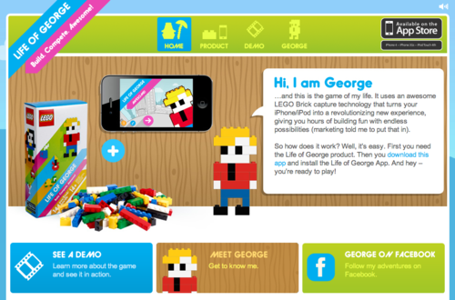

Wed, 14 Dec 2011 13:16:00 · lego · AugmentedReality · LifeOfGeorge · AugR · Play · Games · hacking
Hacking 'Life of George' Lego

I recently bought this insanely fun Life of George Lego AR play kit as early X-Mas present for my five-year-old self (ehem..).
Growing up playing Lego made me hard to resist giving this kit a try and it blows my mind! Not only this Lego kit combines that get-your-hands-dirty playing time with augmented reality, but it also gives you that extra edges by extending your enjoyment through mobile app that throws various challenges to build specific Lego objects within certain time set. On top of that, you could also extend your play experience by sharing and competing against your friends. Play and be social? Oh yea.. it’s on!
Showing the Lego kit at the office made my team effing jealous… and they too want to play! Alas this kit isn’t easy to get if one doesn’t live in the vicinity where Amazon could deliver for Free. So if you happen to be one of those peeps who wants it but doesn’t want to wait, here’s how you can hack the Lego kit and play it in DIY style…
1. Make sure you have at least that one friend who actually own the Life of George Lego kit
2. Ask nicely to borrow the marker that look like this, see pix below:
3. Scan or take a photo of the mat/marker, and print it in COLOUR.
4. Now, do some test by downloading the Life of George App and scan the print out mat. If you see the camera detected the mat (even without any Lego on it), it means that your DIY marker works and good to go.
5. Now, since you don’t have the lego kit, you could opt to use (almost*) any kind of Lego set that you already have, provided that they are in more less the same shape. – *Think of basic lego bricks only, not the fancy ones like those of Star Wars series, etc.
6. Now you’re ready to play… either follow the built-in challenges or create your own.
Voila….!